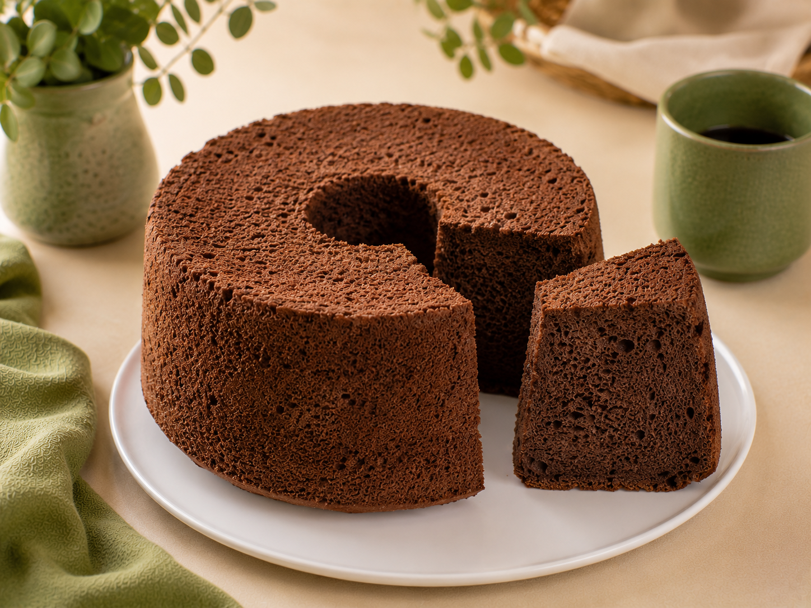

کیک شیفون شکلاتی
پایهای لطیف برای لحظههای شکلاتی با BoBo
کیک شیفون شکلاتی امضای BoBo ترکیبی از لطافت و سبکی شیفون با طعم غنی و عمیق شکلات است. بافت ابری و مرطوب این کیک، آن را به پایهای ایدهآل برای خامهکشی، لایهگذاری و تهیه کیکهای حرفهای قنادی تبدیل میکند. تنها با افزودن چند ماده ساده، میتوانید کیکی شکلاتی با کیفیتی متفاوت آماده کنید؛ مناسب جشنها، تولدها و لحظههایی که یک طعم شکلاتی خاص میخواهید.
وزن بسته: ۵۰۰ گرم
زمان آمادهسازی: حدود ۱۵ دقیقه
زمان پخت: ۵۰ تا ۶۰ دقیقه
دمای فر: ۱۶۵ درجه سانتیگراد
نوع قالب: قالب شیفون ۲۰ سانتیمتری
خروجی: یک کیک شیفون با وزن حدود ۱۰۰۰ گرم مناسب برای ۱۲ تا ۱۴ نفر
مواد لازم جهت اضافه کردن:
جهت ثبت سفارش به صفحات ما در پیامرسانهای اینستاگرام، تلگرام، بله یا ایتا مراجعه نمایید
زمان آمادهسازی: حدود ۱۵ دقیقه
زمان پخت: ۵۰ تا ۶۰ دقیقه
دمای فر: ۱۶۵ درجه سانتیگراد
نوع قالب: قالب شیفون ۲۰ سانتیمتری
خروجی: یک کیک شیفون با وزن حدود ۱۰۰۰ گرم مناسب برای ۱۲ تا ۱۴ نفر
مواد لازم جهت اضافه کردن:
- تخم مرغ
- آب
- روغن مایع